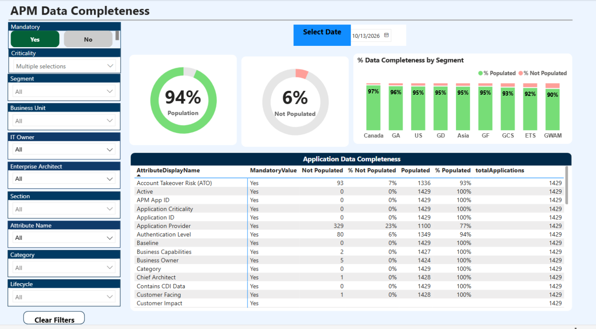

Keys and relationships
Application IDs repeated across dates, preventing a valid one-to-many relationship at the new snapshot grain.
I built and stabilized a Power BI application-data-quality report so teams could assess application completeness and business-rule compliance across daily snapshots—not just a single day.

The original report treated application ID as unique. When history was introduced, the same application appeared once per snapshot date. That broke the model’s key assumption and made it possible for historical rows to be joined or aggregated as if they belonged to one current snapshot.
Application IDs repeated across dates, preventing a valid one-to-many relationship at the new snapshot grain.
Quality checks that reference completeness attributes needed to retrieve values from the matching snapshot.
Some measures could aggregate multiple dates, while incomplete relationship paths repeated grand totals across attributes.
Large historical queries also needed careful date filtering and staged refresh optimization.
I treated the application on a given date as the reporting entity, then carried that grain consistently through source transformations, model relationships, measures, and validation.
AppKey, preserving history without collapsing multiple days into one record.Results and scope: The core snapshot-model fixes, date-aware transformations, relationship corrections, and diagnostics are implemented. No verified before/after refresh benchmark is available, so this case study makes no refresh-speed improvement claim.
If the source captures an entity once per day, the date is part of its identity for historical reporting.
Historical lookups must match both the business key and the snapshot date.
Diagnostics and reconciliation checks expose modeling defects that a visual alone can hide.
Report-side tuning helps, but source indexing, capacity, and materialization may need database-owner support.